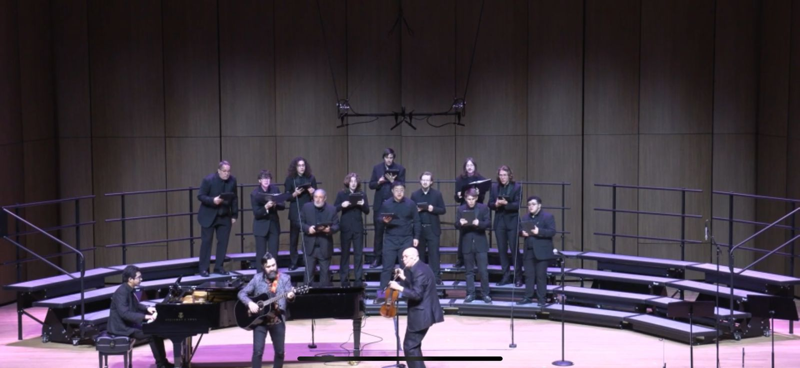
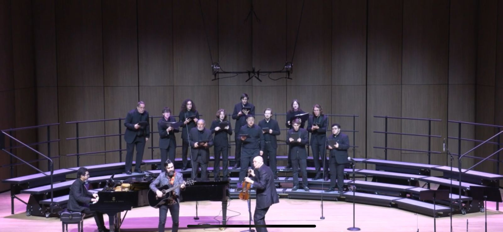

Alejandro
Arroyo Alberto

Pianista · Colaborador · Músico de Cámara
“La música de cámara multiplica la inspiración”
Con una trayectoria consolidada como pianista colaborador y músico de cámara, ofrezco acompañamiento profesional para audiciones, concursos y recitales. He colaborado con artistas premiados en el Concurso Jóvenes Solistas de la OSN, el Concurso de Honor de la UCR, y el Concurso Solistas Universitarios de la UCR, así como en múltiples audiciones de ingreso y graduación a nivel de bachillerato, maestría y doctorado. Además, tengo amplia experiencia como pianista de ópera y coach vocal, con conocimientos en dicción en italiano y alemán. Mi meta es aportar seguridad, musicalidad y flexibilidad a cada proyecto, trabajando en equipo para lograr presentaciones memorables.
Contáctame por WhatsApp

 

Correo: alejandroarroyoalberto@gmail.com